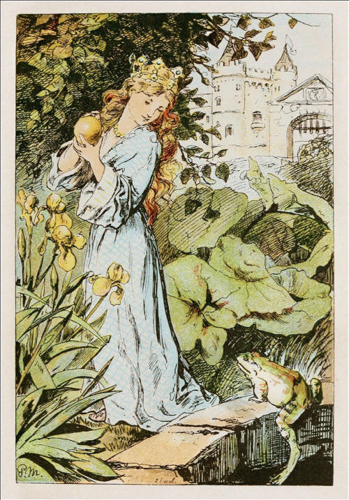

|
In old times when wishing still helped one, there lived a king whose daughters were all beautiful, but the youngest was so beautiful that the sun itself, which has seen so much, was astonished whenever it shone in her face. Close by the King's castle lay a great dark forest, and under an old lime-tree in the forest was a well, and when the day was very warm, the King's child went out into the forest and sat down by the side of the cool fountain, and when she was dull she took a golden ball, and threw it up on high and caught it, and this ball was her favorite plaything. Now it so happened that on one occasion the princess's golden ball did not fall into the little hand which she was holding up for it, but on to the ground beyond, and rolled straight into the water. The King's daughter followed it with her eyes, but it vanished, and the well was deep, so deep that the bottom could not be seen. On this she began to cry, and cried louder and louder, and could not be comforted. And as she thus lamented some one said to her, "What ails thee, King's daughter? Thou weepest so that even a stone would show pity." She looked round to the side from whence the voice came, and saw a frog stretching forth its thick, ugly head from the water. "Ah! old water-splasher, is it thou?" said she; "I am weeping for my golden ball, which has fallen into the well." "Be quiet, and do not weep," answered the frog, "I can help thee, but what wilt thou give me if I bring thy plaything up again?" "Whatever thou wilt have, dear frog," said she--"My clothes, my pearls and jewels, and even the golden crown which I am wearing." The frog answered, "I do not care for thy clothes, thy pearls and jewels, or thy golden crown, but if thou wilt love me and let me be thy companion and play-fellow, and sit by thee at thy little table, and eat off thy little golden plate, and drink out of thy little cup, and sleep in thy little bed---if thou wilt promise me this I will go down below, and bring thee thy golden ball up again." "Oh yes," said she, "I promise thee all thou wishest, if thou wilt but bring me my ball back again." She, however, thought, "How the silly frog does talk! He lives in the water with the other frogs, and croaks, and can be no companion to any human being!" But the frog when he had received this promise, put his head into the water and sank down, and in a short while came swimmming up again with the ball in his mouth, and threw it on the grass. The King's daughter was delighted to see her pretty plaything once more, and picked it up, and ran away with it. "Wait, wait," said the frog. "Take me with thee. I can't run as thou canst." But what did it avail him to scream his croak, croak, after her, as loudly as he could? She did not listen to it, but ran home and soon forgot the poor frog, who was forced to go back into his well again. The next day when she had seated herself at table with the King and all the courtiers, and was eating from her little golden plate, something came creeping splish splash, splish splash, up the marble staircase, and when it had got to the top, it knocked at the door and cried, "Princess, youngest princess, open the door for me." She ran to see who was outside, but when she opened the door, there sat the frog in front of it. Then she slammed the door to, in great haste, sat down to dinner again, and was quite frightened. The King saw plainly that her heart was beating violently, and said, "My child, what art thou so afraid of? Is there perchance a giant outside who wants to carry thee away?" "Ah, no," replied she. "It is no giant but a disgusting frog." "What does a frog want with thee?" "Ah, dear father, yesterday as I was in the forest sitting by the well, playing, my golden ball fell into the water. And because I cried so, the frog brought it out again for me, and because he so insisted, I promised him he should be my companion, but I never thought he would be able to come out of his water! And now he is outside there, and wants to come in to me." In the meantime it knocked a second time, and cried, "Princess! youngest princess! Open the door for me! Dost thou not know what thou saidst to me Yesterday by the cool waters of the fountain? Princess, youngest princess! Open the door for me!" Then said the King, "That which thou hast promised must thou perform. Go and let him in." She went and opened the door, and the frog hopped in and followed her, step by step, to her chair. There he sat and cried, "Lift me up beside thee." She delayed, until at last the King commanded her to do it. When the frog was once on the chair he wanted to be on the table, and when he was on the table he said, "Now, push thy little golden plate nearer to me that we may eat together." She did this, but it was easy to see that she did not do it willingly. The frog enjoyed what he ate, but almost every mouthful she took choked her. At length he said, "I have eaten and am satisfied; now I am tired, carry me into thy little room and make thy little silken bed ready, and we will both lie down and go to sleep." The King's daughter began to cry, for she was afraid of the cold frog which she did not like to touch, and which was now to sleep in her pretty, clean little bed. But the King grew angry and said, "He who helped thee when thou wert in trouble ought not afterwards to be despised by thee." So she took hold of the frog with two fingers, carried him upstairs, and put him in a corner. But when she was in bed he crept to her and said, "I am tired, I want to sleep as well as thou, lift me up or I will tell thy father." Then she was terribly angry, and took him up and threw him with all her might against the wall. "Now, thou wilt be quiet, odious frog," said she. But when he fell down he was no frog but a King's son with beautiful kind eyes. He by her father's will was now her dear companion and husband. Then he told her how he had been bewitched by a wicked witch, and how no one could have delivered him from the well but herself, and that to-morrow they would go together into his kingdom. Then they went to sleep, and next morning when the sun awoke them, a carriage came driving up with eight white horses, which had white ostrich feathers on their heads, and were harnessed with golden chains, and behind stood the young King's servant Faithful Henry. Faithful Henry had been so unhappy when his master was changed into a frog, that he had caused three iron bands to be laid round his heart, lest it should burst with grief and sadness. The carriage was to conduct the young King into his Kingdom. Faithful Henry helped them both in, and placed himself behind again, and was full of joy because of this deliverance. And when they had driven a part of the way the King's son heard a cracking behind him as if something had broken. So he turned round and cried, "Henry, the carriage is breaking." "No, master, it is not the carriage. It is a band from my heart, which was put there in my great pain when you were a frog and imprisoned in the well." Again and once again while they were on their way something cracked, and each time the King's son thought the carriage was breaking; but it was only the bands which were springing from the heart of faithful Henry because his master was set free and was happy. |
TL;DR:http://one-elevenbooks.com/the-frog-king-or-iron-henry/ The Frog-King or Iron Henry is a story that you know. You’ve heard is probably a million times, well, maybe not that many. You’ve seen this story played out on television, in movies, and in plenty of other books. It’s a well-known Grimm’s story, although the Iron Henry reference may be a little confusing. This story is about a princess who goes into the forest to play with her golden ball by a lovely well of water. As she is tossing this ball up and down, each time catching it, there is one time that it fails to return to her hand. Before she can even really discern what is going on the ball has ended up in the well, which is very deep. The princess starts to cry. She hears a voice and it is coming from a frog. The frog says he will retrieve the princess’s golden ball if she allows him to be her companion. The princess agrees already considering not to keep her promise. As the frog promised he soon returns with the golden ball. The princess hastily runs home without the frog. At dinner a knock is heard upon the castle door. When questioned about it the princess admits to her father that she promised a frog that he could be her companion for rescuing her golden ball. The kind is apparently pretty strict on promises and says that the girl must fulfill her promise. They let the frog in. He proceeds to sit beside the princess on the table and eat from her very same plate. The princess is kind of disgusted. When it is time to go to bed the frog goes with the princess to sleep on her pillow. The princess decides to throw the frog against the wall in a fit of anger. When she does this the frog becomes a man, a prince to be exact. The prince says that he is going to take the princess away to his kingdom the very next morning. The next morning a carriage arrives with white horses to take the prince and the princess away. The man driving the carriage is a devote servant named Henry. When the prince had the curse placed upon him by a witch, Henry had iron bars placed around his heart. As the carriage was driving away, the newly minted couple heard a sound as if something was going terribly wrong with the carriage. They called up to Henry saying that maybe the carriage was broken. Henry says it is not the carriage that is breaking, but the iron bands placed around his heart because he is filled with such joy at having his master returned to manhood.  |